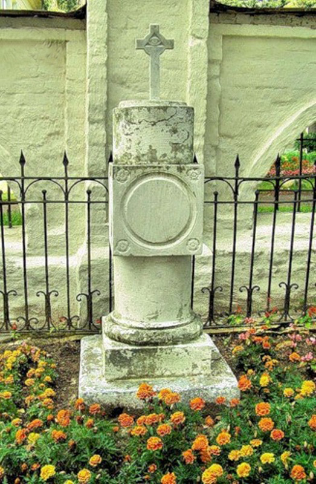

|  | Министерство культуры Российской Федерации Портал Культура.рф Проект «Образы России» |
Pushkin's memorial estate (Vyazemy estate)
N. Pushkin tomb in the churchyard

Vertical white stone tombstone, it is shaped as a column, topped with a cross. One can see an inscription on the top of the monument: ""Nikolai Sergeyevich Pushkin is lying under this stone. 26 March 1801 - 3 July 1807"" The inscriptions are enclosed in round framed medallions. The monument was restored. Tombstone is surrounded by antique wrought-iron bars. It is located behind the altar apse of the Transfiguration Church.
Nikolai Pushkin (1801-1807) - the younger brother of A. Pushkin died in Zakharovo village. Pushkin memorized the death of his younger brother.